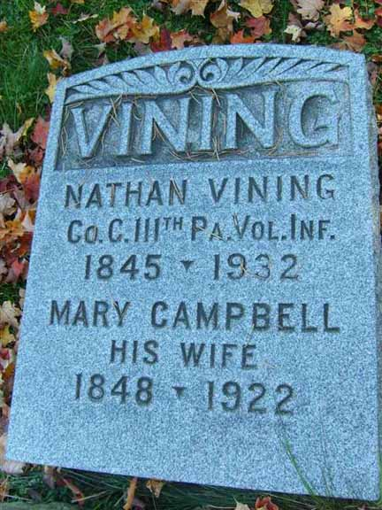

Census Data
| 1870 | 1880 | 1890 | 1900 | 1910 | 1920 | 1930 | 1940 | |
| Nathan Vining | 24 | 33 | ? | 54 | 62 | 72 | 83 | dead |
| Mary (Campbell) Vining | 24 | 32 | ? | 54 | 61 | 70 | dead | |
| Frank E. Vining | 4 | 14 | ? | married and living in separate household | ||||
| Bessie M. Vining | ? | 17 | [living? in separate household] |


Death Data
Headstone for Nathan Vining and Mary (Campbell) Vining, in Pine Hill Cemetery, Falconer, Chatauqua County, New York (Source: Find A Grave):